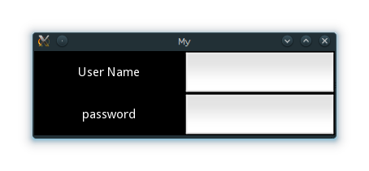

{kind=link}
Table Of Contents
Kivy Basics¶
Installation of the Kivy environment¶
Kivy depends on many Python libraries, such as pygame, gstreamer, PIL, Cairo, and more. They are not all required, but depending on the platform you’re working on, they can be a pain to install. For Windows and MacOS X, we provide a portable package that you can just unzip and use.
If you want to install everything yourself, ensure that you have at least Cython and Pygame. A typical pip installation looks like this:
pip install cython
pip install hg+http://bitbucket.org/pygame/pygame
pip install kivy
The development version can be installed with git:
git clone https://github.com/kivy/kivy
make
Create an application¶
Creating a kivy application is as simple as:
- sub-classing the App class
- implementing its build() method so it returns a Widget instance (the root of your widget tree)
- instantiating this class, and calling its run() method.
Here is an example of a minimal application:
import kivy
kivy.require('1.0.6') # replace with your current kivy version !
from kivy.app import App
from kivy.uix.label import Label
class MyApp(App):
def build(self):
return Label(text='Hello world')
if __name__ == '__main__':
MyApp().run()
You can save this to a text file, main.py for example, and run it.
Kivy App Life Cycle¶
First off, let’s get familiar with the Kivy app life cycle.

As you can see above, for all intents and purposes, our entry point into our App is the run() method, and in our case that is “MyApp().run()”. We will get back to this, but let’s start from the third line:
from kivy.app import App
It’s required that the base Class of your App inherits from the App class. It’s present in the kivy_installation_dir/kivy/app.py.
Note
Go ahead and open up that file if you want to delve deeper into what the Kivy App class does. We encourage you to open the code and read through it. Kivy is based on Python and uses Sphinx for documentation, so the documentation for each class is in the actual file.
Similarly on line 2:
from kivy.uix.label import Label
One important thing to note here is the way packages/classes are laid out. The uix module is the section that holds the user interface elements like layouts and widgets.
Moving on to line 5:
class MyApp(App):
This is where we are defining the Base Class of our Kivy App. You should only ever need to change the name of your app MyApp in this line.
Further on to line 7:
def build(self):
As highlighted by the image above, show casing the Kivy App Life Cycle, this is the function where you should initialize and return your Root Widget. This is what we do on line 8:
return Label(text='Hello world')
Here we initialize a Label with text ‘Hello World’ and return its instance. This Label will be the Root Widget of this App.
Note
Python uses indentation to denote code blocks, therefore take note that in the code provided above, at line 9 the class and function definition ends.
Now on to the portion that will make our app run at line 11 and 12:
if __name__ == '__main__':
MyApp().run()
Here the class MyApp is initialized and its run() method called. This initializes and starts our Kivy application.
Running the application¶
To run the application, follow the instructions for your operating system:
- Linux
Follow the instructions for running a Kivy application on Linux:
$ python main.py- Windows
Follow the instructions for running a Kivy application on Windows:
$ python main.py # or C:\appdir>kivy.bat main.py- Mac OS X
Follow the instructions for running a Kivy application on MacOSX:
$ kivy main.py- Android
- Your application needs some complementary files to be able to run on Android. See Create a package for Android for further reference.
A window should open, showing a single Label (with the Text ‘Hello World’) that covers the entire window’s area. That’s all there is to it.
Customize the application¶
Lets extend this application a bit, say a simple UserName/Password page.
from kivy.app import App
from kivy.uix.gridlayout import GridLayout
from kivy.uix.label import Label
from kivy.uix.textinput import TextInput
class LoginScreen(GridLayout):
def __init__(self, **kwargs):
super(LoginScreen, self).__init__(**kwargs)
self.cols = 2
self.add_widget(Label(text='User Name'))
self.username = TextInput(multiline=False)
self.add_widget(self.username)
self.add_widget(Label(text='password'))
self.password = TextInput(password=True, multiline=False)
self.add_widget(self.password)
class MyApp(App):
def build(self):
return LoginScreen()
if __name__ == '__main__':
MyApp().run()
At the next line we import a Gridlayout:
from kivy.uix.gridlayout import GridLayout
This class is used as a Base for our Root Widget (LoginScreen) defined at line 9:
class LoginScreen(GridLayout):
At line 12 in the class LoginScreen, we overload the method __init__() so as to add widgets and to define their behavior:
def __init__(self, **kwargs):
super(LoginScreen, self).__init__(**kwargs)
One should not forget to call super in order to implement the functionality of the original class being overloaded. Also note that it is good practice not to omit the **kwargs while calling super, as they are sometimes used internally.
Moving on to Line 15 and beyond:
self.cols = 2
self.add_widget(Label(text='User Name'))
self.username = TextInput(multiline=False)
self.add_widget(self.username)
self.add_widget(Label(text='password'))
self.password = TextInput(password=True, multiline=False)
self.add_widget(self.password)
We ask the GridLayout to manage its children in two columns and add a Label and a TextInput for the username and password.
Running the above code will give you a window that should look like this:
Try re-sizing the window and you will see that the widgets on screen adjust themselves according to the size of the window without you having to do anything. This is because widgets use size hinting by default.
The code above doesn’t handle the input from the user, does no validation or anything else. We will delve deeper into this and Widget size and positioning in the coming sections.
Platform specifics¶
Opening a Terminal application and setting the kivy environment variables.
On Windows, just double click the kivy.bat and a terminal will be opened with all the required variables already set.
On nix* systems, open the terminal of your choice and if kivy isn’t installed globally:
export python=$PYTHONPATH:/path/to/kivy_installation